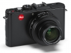
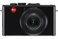
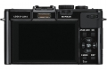
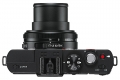
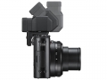

器材库 > 不可换镜头数码相机 > D-Lux 6

规格总览
发布日期
2012-09-17
厂家推荐价格
600.00 （英镑）
影像规格
影像传感器
CMOS
影像传感器尺寸
1/1.7
总像素
1270万
有效像素
1010万
静态图像尺寸
[4:3]3,648 x 2736;[3:2]3776 x 2,520;[16:9]3,968 x 2232;[1:1]2736 x 2736
静态图像格式
JPEG, RAW, MPO
画幅比
3:2, 4:3, 16:9, 1:1
短片尺寸
1920 x 1080 (60, 50, 30, 25 fps), 1280 x 720p (60, 50, 30, 25 fps), 640 x 480 (30, 25 fps)
短片格式
MPEG4-AVC/H.264
短片音效
立体声
防抖系统
POWER O.I.S.
镜头和对焦
镜头结构
11片/10组
非球面镜片
5片
低/超低色散镜片
2片
焦距
4.7mm-17.7mm
等效35mm画幅焦距
24mm-90mm
最大光圈
f/1.4-f/2.3
光学变焦
3.8倍
数码变焦
4.5倍
最近对焦距离
50cm, 微距1cm
对焦模式
面部 / AF追踪 / 多点(23点) / 1点 (任意 / 可伸缩)
AF辅助灯
有
手动对焦
支持
曝光控制
测光模式
中央重点测光, 多分区评价测光, 点测光
曝光模式
Auto, P（程序自动曝光）, A（光圈优先自动曝光）, S（快门速度优先自动曝光）, M（手动测光曝光）
场景模式
肖像、柔肤、自拍肖像、风景、全景助理、运动、夜间肖像、夜景，高感光度，食物、派对、烛光、宝宝1&2、宠物、日落、高速连拍、闪光灯连拍、星空、烟火、海滩、雪景、空中摄影
快门速度
60 - 1/4000秒
曝光补偿
±2EV以1/3EV级调整
ISO感光度
80, 100, 200, 400, 800, 1600, 3200, 6400, 可扩展至12800
白平衡
日光, 白炽灯, 闪光灯, 色温调节, 阴天, 阴影, 白色设置, 自动
自拍
10秒, 2秒, 10秒, 3张
连拍
11张/秒，最多12张
闪光灯
内置闪光灯
弹出式
闪光模式
自动, 慢速同步, 减轻/消除红眼, 强制闪光, 禁止闪光
闪光涵盖范围
0.8 - 8.5米（广角/ ISO自动），0.3 - 5.2米（望远/ ISO自动）
取景规格
LCD类型
TFT LCD
LCD尺寸
3.0英寸
LCD像素
92万
视野率
100%
文件输入/输出
内置存储容量
70 MB
存储卡
SD/SDHC, SDXC
数据接口
USB
视频/音频接口
HDMI Mini 输出
电源
电池
锂离子电池（3.6V，最低：1250毫安）
续航能力
330张
外观
颜色
黑色
尺寸
110.5 × 67.1 × 46.6mm
重量
269g
恨无缘2014-09-13 07:204.44 分
操作性 4.50功能性 4.50美观性 4.50趣味性 4.50耐用性 4.50性价比 3.50解像力 4.50色彩还原 5.00
greenpants2014-02-13 18:345 分
操作性 5.00功能性 5.00美观性 5.00趣味性 5.00耐用性 5.00性价比 5.00解像力 5.00色彩还原 5.00
产品图 / 样片



